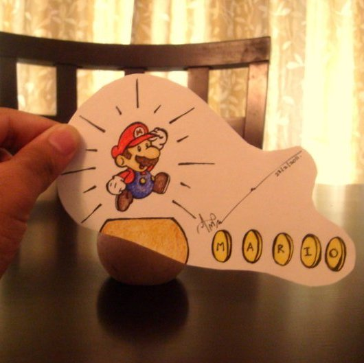
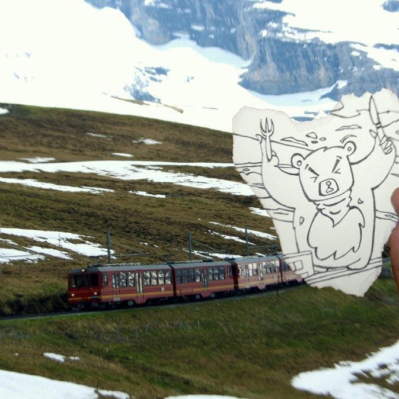
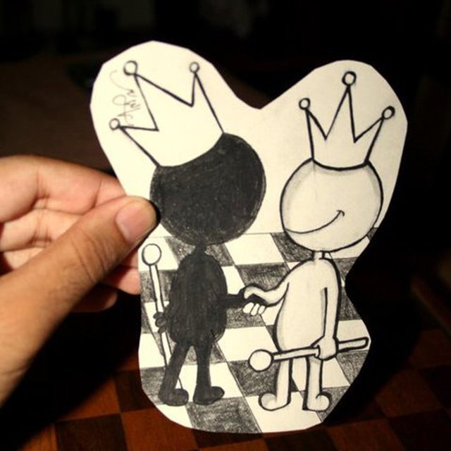

In the wake of Facebook's release of the Occulus Rift and Microsoft and Magic Leap with their own versions of essentially the same technology, the promise of virtual/augmented reality is enormous.
I'm fascinated by the technology and excited about how we can utilize it to create truly immersive experiences. What's even more exciting is that I've found Augmented Reality fascinating (in my own way) for a long time, and I didn't even know it. I created these when I was still in school.



When the 'Heist' feature was rolled out, my photograph was used to create an NPC. This is what it looked like.